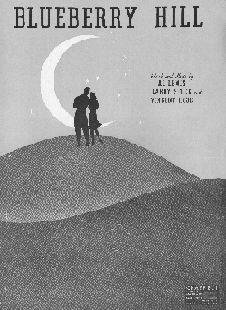

<html>
<head>
<title>The Annotated "Scarlet Begonias"</title>
</head>
<body>
<i>"Everybody's playing in the Heart of Gold Band"</i>

<H2><a name="scarlet">The <i>Annotated</i> "Scarlet Begonias"</a></H2>
An installment in <a href="gdhome.html"> The <i>Annotated</i> Grateful Dead Lyrics.</a><br>
By <a href="david.html">David Dodd</a><br>
1997-87 Research Associate, Music Dept., University of California, Santa Cruz
<hr>
<a href="copyrigh.html">Copyright notice</a>
<hr>
<H3><a href="#overall">"Scarlet Begonias"</a></H3>words by Robert Hunter; music by Jerry Garcia<br>
("Scarlet Begonias" composed and written by Jerry Garcia and Robert Hunter. Reproduced by arrangement with Ice Nine Publishing Co., Inc. (ASAP))<br><blockquote>
<a href="#walkin">As I was walkin'</a> round <a href="#grosvenor">Grosvenor Square</a><br>



Not a chill to the winter <br>



but a nip to the air <br>



From the other direction <br>



she was calling my eye<br>



It could be an illusion<br> 



but I might as well try <br>



Might as well try. <br>



<p>



She had <a href="#rings">rings on her fingers and <br>



bells on her shoes,</a><br>



And I knew without askin' she was<br> 



into the blues <br>



Scarlet begonias <br>



tucked into her curls<br>



I knew right away <br>



she was not like other girls--<br> 



other girls <br>



<p>



In the thick of the evening<br> 



when the dealing got rough <br>



She was <a href="#pat">too pat to open and <br>



too cool to bluff</a><br>



As I picked up my matches and<br> 



was closing the door<br>



I had one of those flashes:<br> 



I'd been there before--<br> 



been there before.<br>



<p>



<i>[Bridge]</i><br>



<a href="#wrong">I ain't often right<br> 



but I've never been wrong</a><br>



It seldom turns out the way<br> 



it does in the song<br>



Once in a while<br> 



you get shown <a href="light.html">the light</a><br>



in the strangest of places<br> 



if you look at it right<br>



<p>



Well there ain't nothin' wrong<br> 



with the way she moves<br>



Or scarlet begonias or a<br> 



touch of the blues<br>



And there's nothing wrong with<br> 



the <a href="#look">love</a> that's in her eye<br>



I had to learn the hard way<br> 



to let her pass by--<br> 



let her pass by<br>



<p>



<a href="#wind">The wind in the willows</a> played <a href="#tea">Tea for Two</a><br>



<a href="#sky">The sky was yellow and the sun was blue</a><br>



Strangers stopped strangers<br> 



just to shake their hand<br>



Everybody's playing<br> 



in the Heart of Gold Band<br> 



Heart of Gold Band



</blockquote>



<hr>



<H3><a name="overall">Scarlet Begonias</a></H3>


Musical details:

<ul>

<li>Key: E

<li>Time signature: 4/4

<li>Chords used: E, B, A, F#

<li>Songbook availability:

<ul>

<li><cite><a href="songbook.html#gdvol2">Grateful Dead, vol. II</a></cite>

<li><cite><a href="songbook.html#Anthology">Anthology</a></cite>

</ul>

</ul>


"Scarlet Begonias" debuted on March 23, 1974, at the Cow Palace in Daly City,



California. The show also included the first<a href="cassidy.html"> "Cassidy,"



</a> as well as the sound test for the famous "wall of sound" system. It



appeared in the first set, between <a href="btwi.html">"Black Throated Wind"</a> and "Beat It On Down the Line."



<p>



Two days later, the group began recording <cite><a href="discog1.html#mars">From the Mars Hotel</a></cite>, on which



the song appears. <cite> (DeadBase)</cite>



<p>



Recorded on



<ul>



<li><cite><a href="discog1.html#mars">From the Mars Hotel</a></cite>



<li><cite><a href="discog1.html#dick6">Dick's Picks, v. 6</a></cite>



</ul>



<p>



Robert Hunter recorded the song on his <cite><a href="huntdisc.html#box">Box of Rain</a></cite> album. (1991)



<p>



Keith and Donna Godchaux covered the tune on <cite><a href="guest.html#godchaux">The Ghosts Playing in the



Heart of Gold Band</a></cite>. (1984) 
<p>
This note from a reader regarding some 2002 developments:
<blockquote>
Subject: Annotated Scarlet Begonias<br>
Date: Sun, 16 Feb 2003 23:30:02 -0500<br>
From: "Chad Walker" <krishna42@hotmail.com><br>
<br>

Okay, I'll open with the traditional "love the site" that I see so often on the site. :)
<p>
I started reading the "too pat to open" discussion for Scarlet Begonias and thought I'd throw this into the mix.  On 6/1/02 when Hunter opened for Phil and Friends, he introduces his wife and says he wrote the song for her. Of course, he also says he's been married to her for 20 years ("20 years of wedded bliss"), implying 1982 or so, so maybe not, but he certainly
*said* it was.
<p>
Also, on 8/4/02, he adds another verse after the last one (the heart of gold band verse), beginning with "As I was walking down Grosvenor Square" (lyrics in parentheses are really hard for me to hear :)
<p>
<blockquote>
She had two (white vermillions?) in her snow white hair<br>
She must have been (Mattie?) but she looked like my wife<br>
I gazed into the future, could be all right, gettin' old with her,<br>
Gettin' old with her, my Scarlet Begonias<br>
</blockquote>
<p>
As I said, just thought I'd throw it out there.
<br>
<p>
Kallisti! @(-_-)@<br>
Chad Walker<br>
krishna42@hotmail.com<br>
http://www.geocities.com/krishna42<br>

</blockquote>


<p>



This notification of a cover from a reader:



<blockquote>



Date: Fri, 06 Oct 95 15:20:15 -0700<br>



From: Maziar Sadri<br>



<p>



If you really like this song (and I'm sure you do) You should listen to the 



cover of it from a band called Sublime, they do (in my opinion)the 



greatest version of it. you won't be dissapointed.  It is on an album 



called 



<cite><A HREF="http://www.amazon.com/exec/obidos/ASIN/B000002P22/theannotategr-20">
40 Oz. to Freedom</A></cite> by <a href="http://www.skunk.com/sublime/" target="new">sublime</a>.



<p>



mazi



</blockquote>



<p>
The lyrics from Sublime's version:
<blockquote>

As I was walkin down rubadub square <br>
Not a chill to the window but a little to the air <br>
From another direction she was calling my eye <br>
It could be an illusion, but I might as well try <br>
..might as well try<br> 
<br>
She had rings on her fingers and bells on her shoes <br>
And I knew without asking she was into the blues <br>
She wore scarlet begonias tucked into her curls <br>
I knew right away she was not like other girls...like other girls <br>
<br>
Well I ain't never been right as I ain't never been wrong <br>
As everything works out the way it does in this song<br> 
Cause once in a while you get shown in the light<br> 
In the strangest of places if you look at it right <br>
<br>
It was the summer of love and I thank the stars above <br>
Because the women took a lovin over me<br>
And just to gain her trust, I bought a microbus <br>
Because I sold off all my personal property <br>
<br>
A tie-tie-dyed dress , she was a psychedelic mess <br>
We toured to the north, south, east and west <br>
We sold some mushroom tea,<br>
we sold some ecstasy,<br> 
We sold nitrous, opium, acid, heroin and PCP <br>
And now I hear the police coming after me <br>
Yes now I hear the police coming after me <br>
The one scarlet with the flowers in her hair,<br> 
She's got the police coming after me <br>
<br>
Well there ain't nothing wrong with the way she moves <br>
All scarlet begonias and a touch of the blues <br>
And there ain't nothin wrong with the love that's in her eyes <br>
I had to learn the hard way just to let her pass by... let her pass by.<br> 
</blockquote>


<ul>



<li><a href="http://www.americast.com/WENZ/sanctum/bands/OROBOROS/index.html" target="new">Oroboros</a> covers the song in their live performances.



<li><a href="http://www.phish.com" target="new">Phish</a> has covered the song live at least twice.



</ul>



<p>



Blair Jackson, in <a href="biblio.html#jackson"><cite>Grateful



Dead: the Music Never Stopped</cite></a>, says this about the song: "`Scarlet



Begonias" remains one of Hunter and Garcia's very best songs, with its



intricate percolating rhythm...a bright, tuneful melody, and



dreamy lyrics: `The wind in the willows played "Tea for Two'/The



sky was yellow and the sun was blue,' the final verse begins,



continuing with a wonderfully worded sentiment that describes the



bond between Deadheads and the band--`Strangers stoppin'



strangers/just to shake their hand/Everybody's playing in the



heart of gold band.' If there is one sentiment that is repeated



over and over again by both Deadheads and the band, it is that



they feel they are all actually part of the same animal, in the



same sense that a Grateful Dead show is a giant gestalt in which



the band and the audience support each other. Everyone <i>is</i>



in the band in that respect." (p. 155)



<hr>



<H3><a name="walkin">As I was walkin'</a></H3>



A standard opening line in the British tradition, used in ballads



and nursery rhymes. Along with the reference to Grosvenor Square,



this line sets the song squarely in Britain.



<p>



One <a href="goose.html">nursery rhyme</a> which the song clearly



echoes is "Pippen Hill":



<blockquote>



 As I was going up Pippen Hill,<br>



     Pippen Hill was dirty;<br>



There I met a pretty Miss,<br>



     And she dropped me a curtsy."<br>



</blockquote>



<p>



<a href="biblio.html#mother">Source:</a><cite><b>The Real Mother



Goose</cite></b>, Rand McNally, 1916.



<p>



This interesting email from a reader:



<blockquote>



Subject: scarlet begonias <br>



Date: Sat, 10 Aug 1996 10:00:33 -0700 (PDT) <br>



From: "W. Bubelis" <wallyb@u.washington.edu><br>



<p>



Had a thought about Scarlet Begonias.  The line "As I was walkin' 'round



Grosvenor Square" has always intrigued me for the juxtaposition of the



circle and square.  Brewer's Dictionary of Phrase and Fable (15th ed.)says



of "To square the circle" that it is "to attempt an impossibility.  The



allusion is to the impossibility of exactly determining the precise ratio



(pi) between the diameter and the circumference of a circle, and thus



constructing a circle of the same area as a given square."  This makes



more sense in the light of the last line of the verse: "It could be an



illusion, but I might as well try, might as well try."<br>



wally bubelis



</blockquote>



<p>



Fun thought!



<hr>



<H3><a name="grosvenor">Grosvenor Square</a></H3>



"<a href="http://www.streetmap.co.uk/streetmap.dll?grid2map?528250&180750" target="new">Grosvenor Square</a>, six acres in extent, takes its name from Sir Richard 



who died in 1732. It was built between 1720 and 1730, and has retained



its popularity as a centre of wealth and fashion ever since that time." 



<a href="biblio.html#clunn">(Harold P. Clunn. <i>The Face of London</i>,</a> 



Spring Books, 1956.)



<p> 



During WWII, Grosvenor Square was nicknamed "Eisenhower Platz" due to the



presence of the American Embassy. Most other buildings on the square



during the war housed U.S. military headquarters.



<hr>



<H3><a name="rings">Rings on her fingers...</a></H3>



This line echoes another nursery rhyme, "Banbury Cross":



<blockquote>



"Ride a cock--horse to Banbury Cross,<br>



To see an old lady upon a white horse.<br>



Rings on her fingers, and bells on her toes,<br>



She shall have music wherever she goes."<br>



</blockquote>



[<a href="biblio.html#mother">Source:</a>] <cite><b>The Real Mother Goose</cite></b>, Rand 



McNally, 1916.



<p>


And Art Weller points out that <a href="http://www.raystevens.com/~rstevens/index.html" target="new">Ray Stevens'</a> song, <a href="http://www.raystevens.com/~rstevens/ramfiles/ahab.ram" target="new">"Ahab the Arab"</a>


also contains similar lines:


<blockquote>WELL....<br>          HE BROUGHT THAT CAMEL TO A SCREECHING HALT AT THE REAR OF FATIMA'S TENT<br> 
JUMPED OFF CLYDE, SNUCK AROUND THE CORNER AND INTO THE TENT HE WENT<br>
THERE HE SAW FATIMA LAYING ON A ZEBRA SKIN RUG WEARING RINGS ON HER FINGERS AND BELLS ON HER TOES AND A BONE IN HER NOSE HO, HO. </blockquote>
Thanks, Art!
<p>
Another note on this line from a reader:
<blockquote>



From: Meg Shear [mailto:megs9@stanford.edu]<br>
Sent: Saturday, September 14, 2002 2:59 AM<br>
Subject: annotation<br>
<br>

Hi David,
<br>
In some of my own research involving early recordings on Edision
cylinders, I stumbled upon a familiar sounding lyric that might be helpful
to you in yours:
<br>
"Sure I've got rings on my fingers and bells on my toes"
<br>
also comes from the chorus to a popular Irish song "I've Got Rings On My
Fingers" composed by R.P. Watson and F.J. Barnes.  It was one of the top
20 songs of 1910 so it seems.
<br>
The first thing that came to mind was none other but Scarlet Begonias of
course!
<br>
I hope this helps you out, let me know if you're interested in any more
information on the song...
<br>
<pre>
* m
     e
         g
           *
</pre>


</blockquote>
<hr>
<h3><a name="pat">too pat to open and too cool to bluff</a></h3>
I asked for opinions on these lines, at the prompting of a reader, from the fine folks on the Deadlit conference on the <a href="http://www.well.com">WELL</a>, and with their kind permissions, here is what resulted:
<blockquote>
<p><br>
#27 of 62: David Dodd (ddodd)      Fri Apr 20 '01 (12:34)     9 lines<br>
<p>
 OK. I have had a reader of the Annotated Lyrics site ask me to explain the
 line (or at least provide some definition of the phrases in the line) "She
 was too pat to open and too cool to bluff." I've looked on poker web sites,
 which indicate that a pat hand is a draw hand to which you do not need to
 draw, e.g. you were *dealt* a great hand. So, after an evening spent
 flirting, or whatever, the narrator, speaking of the nameless female in the
 song, characterizes the night as a poker game, and takes what he has left of
 his stake (his "matches") because she won't part with anything she has,
 being "pat", and can't be bluffed either. Or? Any ideas?
<p>

#28 of 62: Don't eat the music (tnf)      Fri Apr 20 '01 (12:54)     3 lines
<p>
 Seems to me he's talking about a mysterious character who just doesn't need
 to do things the usual way.  "Too pat to open" and "too cool to bluff" are
 pretty extreme conditions!
<p>

#29 of 62: gazorninblat (dwaite)      Fri Apr 20 '01 (13:26)    11 lines
 too pat to open. usually indicates that the player will pass, so that
 someone else opens, so they can raise the stakes from the onset.
<p>
 The too cool to bluff - would seem like the hand is pat, or, all aces or
 the like and therefore has no need to bluff, but keeping it cool..  has won
 the hand without even looking - yet trying to raise the stakes without being
 overly anxious... trying to get the biggest band for the buck...
<p>
 so I don't see it as being bluffed, as much as knowing that she has the
 winning hand, and wants all she can get without taking too much and forcing
 her hand....
<p>
#31 of 62: notimetohate       Fri Apr 20 '01 (16:53)     6 lines
<p>
 My take on "She was too pat to open and too cool to bluff" is that he 
 could tell she was satisfied with where she was at and she wasn't going
 to initiate a conversation/friendship with him. And he could tell if
 he started it, that he couldn't match what she had and would have to
 bluff, but knew that wouldn't work with her.
<p>

<p>
#32 of 62: Don't eat the music (tnf)      Fri Apr 20 '01 (17:55)     1 line
<p>
 Oh, I like that.
<p>
<p>
#33 of 62: John Shahabian (comet)      Fri Apr 20 '01 (23:38)    24 lines
<p>
 It is an obliquely nonsensical line, meant I believe to imply a
 charming, even passionately foolish person, like, say...Scarlet O'Hara.
<p>

 Why nonsensical?  Because it is phrased like a compliment, but when
 you think about it, holding a "pat" hand doesn't mean just good cards.
 Pat means confidence, verging on over-confidence (too pat), that it is
 a winning hand.  So describing someone as "too pat to open" is like   
 saying that they were so sure of winning they forgot to show up.
 Another way of saying they let their deal go down.
<p>
 Then, since in Jerryspeak cool is a perjorative, Scarlet's being too
 cool to bluff is the female version of the soldier who was much too
 wise to take a chance.  The sailor courageously leaps into the fire,
 which any fool can see is nothing if not a foolhardy bluff.  I will not
 forgive you if you will not.
<p>
 In the snide (bells on her shoes?) Scarlet Begonias, Jerry amiably
 laments that although the signs of foolishness were evident (knew right
 away/without asking), he was only a man who should have (but didn't)
 let her pass by.
<p>
 Must've been the roses....er..ruby begonias.
<p>

<p>
#34 of 62: Don't eat the music (tnf)      Sat Apr 21 '01 (08:44)    11 lines
<p>

 >describing someone as "too pat to open" is like saying that they were so  
 >sure of winning they forgot to show up.
<p>
 !!!
<p>

 >in Jerryspeak cool is a perjorative
<p>
 It is?
<p>

<p>
#35 of 62: David Dodd (ddodd)      Sat Apr 21 '01 (09:42)     2 lines
<p>
 What a great set of observations! Would anyone object to having these
 thoughts posted on the Annotated Lyrics site?
<p>
<p>
#36 of 62: gaozrninblt (dwaite)      Sat Apr 21 '01 (14:13)     2 lines
<p>
 not i, if you mean mine, and I would consider any form of my post an honor
 to be put up there.                                                         
<p>
 #37 of 62: Mud Love Buddy, Feelin' Groovy... as long as you've got your health!
(almanac)      Sat Apr 21 '01 (14:29)    13 lines
<p>

 >>in Jerryspeak cool is a perjorative
<p>
 >It is?
<p>
 Ditto that "it is?" -- I must've missed that in the Jerryspeak glossary, but
 I never inferred that from his use of the word. And just to be picky, this
 is Hunterspeak! (Well, Hunterwrite/Jerrysing) ;-)
<p>
 Seems to me that the narrative has moved beyond the "forgot to show up"
 option by the time we reach the line in question (based on the line that
 precedes it). Anyway, I don't get a pejorative implication from the line, so
 much as rueful admiration.
<p>
<p>
#38 of 62: Don't eat the music (tnf)      Sat Apr 21 '01 (15:16)     1 line
<p>
 You re welcome to use my posts, David, if I said anything of interest.  
<p>
 #39 of 62: notimetohate       Sat Apr 21 '01 (17:45)     1 line
<p>
 it's fine to use mine and if attribution is used I prefer anonymous
<p>
<p>
#40 of 62: With a crashing but meaningless blow (jera)      Sat Apr 21 '01 (18:0
4)     4 lines
<p>
 What a wonderful discussion!  Keep it up!
<p>
 I also don't hear anything pejorative in "too cool to bluff,"
 but otherwise, this has really opened up those lyrics!
<p>
<p>
#41 of 62: Strip em naked and hose em down (scarlet)      Sat Apr 21 '01 (19:33)
     2 lines
<p>
 I'm terribly interested in this conversation.  Of course, since I'm
 'scarlet' and Pat, maybe 'too pat' sometimes.    
 <p>
 #42 of 62: John Shahabian (comet)      Sat Apr 21 '01 (22:17)    12 lines
<p>
 I bow to popular opinion, perjorative withdrawn.
<p>
 When thinking about the line "too cool to bluff" I connected it with
 "thought you was the cool fool" of Sugaree, which is another similarly
 fractured Hunter/Garcia love song.
<p>
 And the FOTM verse "you're playing cold music on the barroom floor" is
 aimed at what else but the foolish cool?
<p>
 Feel free to use my ramblings on the lyrics, with a dose of
 appreciation for the entertainingly ambiguous lines of Robert Hunter.
<p>

<p>
#43 of 62: Brian Penney (bpenney)      Sat Apr 21 '01 (23:01)    42 lines
<p>
 i took my first vacation (anything over 5 hours from lexington) in
 many moons thursday to see phil in asheville. took off after about
 three hours of sleep. got pulled over 20 minutes from asheville by a
 very kind, friendly and 8) naive cop... kept thinking, gd luck...
 getting away something i never should have been doing... with some
 superb directions from one of many kind folks on emule i drove right to
 the civic center, no problem. searched awhile in the parking lot for a
 perfect buzz combination with some beer, xanax, weed and regretably, a
 percocet. by the end of the first set i needed to sit down and close
 my eyes... had my head in my hands and looked up to see a girl/woman (i
 still don't know...) floating in front of me... mind if i sit in front
 of you? naw, cool... well how bout i sit right next to you? uh, yeah,
 yeaH, Sure... amy... last show was 89... been in the virgin islands
 since... saw ratdog last week.. second show since being back... like
 warren? yeah, he's fine... uh, you're name is amy? uh-hu... wild eyes,
 not focused on anything but penetrating... smiled *the* most genuine
 smile i've ever seen... lookin right at me... and i'm a sucker for
 those eyes and that smile... smit-fuckin-tun... i was clinging like a
 tick on spot to consciousness, needed to close my eyes and listen,
 drift away, sleep.... and all that would come to me was "had to learn
 the hard way, to let her pass by..." scarlet begonias... if they'd have
 played it i'd have smiled a smile delivered straight from karma...
 fate... a blessing. or maybe a "hehe 8)" from life... the past 12 hours
 dissolved and she said "i don't dissect it. i just dig the music..."
 eyes smiling, smile staring... "my last show *was* *89*...." and then a 
 few strange things made sense... and the music vibrated my head... and
 she gave me half of her orange and was gone... thanks for letting me
 sit with you.... <poof!>
<p>
<blockquote>
 #31 of 42: notimetohate  Fri 20 Apr '01 (04:53 PM)
<p>
 My take on "She was too pat to open and too cool to bluff" is that he
 could tell she was satisfied with where she was at and she wasn't
 going to initiate a conversation/friendship with him. And he could tell
 if he started it, that he couldn't match what she had and would have
 to bluff, but knew that wouldn't work with her.
</blockquote>
<p>

 exactly...  exactly....
<p>

<p>
#44 of 62: Eternity must be earned... (mellobelle)      Tue Apr 24 '01 (07:55)
  14 lines                      
  <p>
  Scarlet Begonias has my favorite woman in it of all the women in the
 Dead oeuvre. She's cool, she's together, she's so confident and not
 afraid of drawing attention to herself, she wears scarlet begonias in
 her hair and bells on her shoes. She has no need of the singer, <sffog>
 has that exactly right. Altho', I think she enjoys his company for the
 evening, but when the evening ends, she's done with him. And she
 doesn't fake her interest. (Too cool to bluff)
<p>
 I've always identified with this woman because she was not like other
 girls and I've had that said to me more times than I can count. I
 aspire to be as cool and confident as this woman. I certainly have more
 success at it now than I did in my 20's.
<p>
 If any of this is any interest to post or pass along, feel free.
<p>
<p>
#45 of 62: neil (neil-glazer)      Tue Apr 24 '01 (08:07)    11 lines
<p>
 I think mel's got it dead-on.  I've always interpreted "too pat to
 open" as meaning she's kicking back, the queen of the bar, she ain't
 sayin' a thing to you unless you speak first.  And when you do, she's
 "too cool to bluff," meaning don't bullshit her, don't give her any 
 stock pickup lines, or you'll probably wind up in the pile of rejects
 all around her.  In the end, of course, the singer leaves by himself,
 and realizes this is the way it is for him (and most guys): "I had one
 of those flashes that I'd been there before."
<p>
 I can't imagine this adds anything to what's already been said, but
 you're welcome to it if you think otherwise.
<p>
<p>
#46 of 62: notimetohate      Tue Apr 24 '01 (18:50)     5 lines
<p>
 seems a topic on views of the various characters in grateful dead
 songland might be a more appropriate topic
<p>
 to me, scarlet begonias contrasts greatly with loose lucy or money
 honey, but I guess she could be the lady with a fan or sugar magnolia
<p>
<p>
#47 of 62: Don't eat the music (tnf)      Tue Apr 24 '01 (19:17)     3 lines
<p>

 See deadlit.27            Point of View in Dead Lyrics        
 #48 of 62: spacecakes (spacecakes)      Tue Apr 24 '01 (23:04)    13 lines
<p>
 How about from Scarlet:
<p>
 As I picked up my matches, she was closin' the door.
<p>
 My interpretation:
<p>
 I took what little was left from the card table, as lady luck took her
 due.
<p>

 Whaddaya think?
<p>


<p>
#49 of 62: spacecakes (spacecakes)      Tue Apr 24 '01 (23:05)     1 line
Whoops...#44 had it first.
<p>
<p>
#50 of 62: Dizzy with the possibilities (ssol)      Wed Apr 25 '01 (16:11)     8
 lines
<p>
 Her name is April Tucker. I've drunk with this woman. I know her. Her
 name is April Tucker, and that song is exactly right on, just exactly
 perfect, whatever the hell it all means. We may never know. If Hunter
 has been drinking with April, he probably doesn't really have a clue,
 either. He found those words scribbled on a bar napkin tucked into his
 jeans' pocket, waking with a headache and a face sore from smiling the
 next day, in a hotel room in a city, the name and location of which, he
 was uncertain. Pretty sure he was also stone-broke.
<p>
<p>
#53 of 62: spent a little time on the hill (mntnwolf)      Thu Apr 26 '01 (23:13
)     7 lines
<p>
 > #48 of 52: spacecakes (spacecakes) Tue 24 Apr '01
 > How about from Scarlet:<br>
 > As I picked up my matches, she was closin' the door.
<p>
 I'm pretty sure it's:<br>
 As I picked up my matches, and was closin' the door,
<p>

<p>
#54 of 62: Don't eat the music (tnf)      Fri Apr 27 '01 (00:28)     1 line
<p>
 David's correction is correct, I believe.
<p>
<p>
#55 of 62: neil (neil-glazer)      Fri Apr 27 '01 (07:04)     3 lines 
<p>

 Always been my understanding.  As in, "I was on my way out of the
 joint," when "I had one of those flashes . . ."  Deja vu all over
 again.  :^)
<p>
<p>
#56 of 62: John P. McAlpin (john-p-mcalpin)      Fri Apr 27 '01 (11:52)     4 li
nes
<p>
 Cognizance at first sight: 'I knew without asking she was into the
 blues.'
<p>


<p>
#57 of 62: Strip em naked and hose em down (scarlet)      Fri Apr 27 '01 (11:56)
     7 lines
<p>
 I always puzzle over<br>
 		<blockquote>
        I ain't often right<br>
        but I've never been wrong 
		</blockquote>
		although I fully get
		<blockquote>
        It seldom turns out the way
        it does in the song
		</blockquote>
<p>
<p>
#58 of 62: Dizzy with the possibilities (ssol)      Fri Apr 27 '01 (17:40)     5
 lines
<p>
 Say it while looking at yourself in front of a mirror, with a big,
 proud smile on your face. I bet it will make sense.
<p>
 Aint sure if it's sarcasm or irony he's lobbing our way, but it's
 ladled out in big gobs, whatever it is.
<p>
<p>
#59 of 62: spent a little time on the hill (mntnwolf)      Mon Apr 30 '01 (06:10
)     9 lines
<p>
 I take that as meaning "there are no mistakes"; i have made many
 conscious choices that didn't turn out like my rational mind
 thought that they would, but all what's happened to me has happened
 for a reason -- that contributed to my growth -- at least i could 
  take a lesson from it, thus it wasn't "wrong" in the cosmic view...
<p>
 An optimistic view of Life.  Perhaps an enlightened one, i dunno.
<p>


<p>
#60 of 62: notimetohate     Mon Apr 30 '01 (18:20)     2 lines
<p>
 I took it as he is one with the mindset that they can never be wrong,
 at least to themselves, and are unable to admit every being wrong
<p>
<p>
#61 of 62: Jerry (bost)      Tue May  1 '01 (07:00)     1 line
<p>
 that's how i always took that line also
<p>
<p>
#62 of 62: David Dodd (ddodd)      Tue May 15 '01 (12:07)     5 lines
<p>
 Wow! This discussion really took off in a wonderful way. Thanks everyone for
 all the great ideas about Scarlet Begonias. I'll do some cutting and pasting
 and add the discussion's relevant portions to the annotated lyrics site.
 (Please let me know if I put up anything you'd like removed...). The site's
 URL is http://arts.ucsc.edu/gdead/agdl  
</blockquote>

<p>
And here's a mini-essay from Craig Dudley, in which he uses the line "too pat to open" as a key to the entire song:
<blockquote>
Subject: Too pat...
Date: Sat, 23 Jun 2001 10:21:35 -0700 (PDT)
From: jtr <jtr357@yahoo.com>
<p>
Dear Mr. Dodd:
<p>
I was looking around your website and wanted to
comment on this line from “Scarlet Begonias.” I know
this is kind of late in the game, but anyway...
<p>
I used to play a lot of poker in the past, and “too
pat to open” strikes me as an almost nonsensical
contradiction. A pat hand is generally a winning hand,
and with a pat hand you pretty much *have to* open in
the first round of bidding after the deal. If it’s the
first round of bidding and you don’t open and no one
else opens either, all the hands will be thrown out
and the cards will be re-dealt. In other words, if you
don’t open you take a substantial chance of a lost
opportunity. So you must open, even if it’s only with
a low bid to sandbag the other players.
<p>
Same thing with “too cool to bluff”—it makes no sense.
You *have to* be cool if you’re going to bluff, and
the cooler the better. There’s no such thing as “too
cool” when it comes to bluffing. Again, it’s a
nonsensical contradiction.
<p>
So what does the line mean? My own personal take is
that he’s describing a woman who won’t play the game.
She’s a contrary woman. She sends out signals that
she’s a player when you first meet her, but when it
comes time to play the game, she presents another
face—opposition, contrariness, and refusal to play by
the rules.
 <p>
In other words, the singer is describing a meeting
with an attractive woman dressed like a free spirit,
but also with an air of melancholy about her (a touch
of the blues), and he is instantly attracted by her
(“I knew right away she was not like other girls”).
She sounds like kind of a Jungian anima figure for
him--there’s a lot of magnetism (“she was calling my
eye”) and magic surrounding her (“it could be an
illusion”). So he decides to make a play for her (“I
might as well try”).
<p>
But reality catches up with him when he makes his
play. The dealing gets rough, she remains aloof and
refuses to be swept up in the moment the way he is,
and he finally leaves. It’s here that he has an
epiphany. Originally, he thought “she was not like
other girls.” But now he realizes that he has, in
fact, “been there before.” In other words, he realizes
that he is routinely attracted by this particular type
of woman (seemingly a free spirit at first glance, but
ultimately melancholy and contrary once you get to
know her), and the relationships always turn out bad.
He has, indeed, “been there before” too many times,
and now it’s time to wise up and learn a lesson: “I
had to learn the hard way to let her pass by”.
<p>
The sense of an epiphany is bolstered by the line “as
I picked up my matches and was closing the door.” He
is closing a door on an old mistaken view of
relationships, and on a certain type of woman who
attracts him but always leads him to grief. And
picking up the matches signifies something similar. In
Hunter’s lyrics, heat and fire are associated with
emotional intensity, creativity, or just riding an
emotional jag. To take his matches as he leaves means
to deprive others of the privilege of partaking in his
emotional intensity. It’s the equivalent of the
Biblical habit of wiping the dust off your feet as you
leave a town that has rejected you.
 <p>
But he learns more than just this. He doesn’t just
walk out on a relationship. The following stanzas also
speak of forgiveness and understanding toward both
himself and the woman.
 <p>
Perhaps when his relationships went bad in the past he
blamed himself and told himself that he had to try
harder in his relationships. But on this particular
occasion he finally realizes what the problem is: He
routinely has an immediate animal attraction to a
particular type of woman who turns out to be
incompatible with him over the longer term. There’s a
lot of relief attached to this realization. In the
past he very likely has often wondered who was at
fault when relationships went bad, but now he realizes
it’s just a simple case of incompatibility. No one is
at fault. There’s nothing wrong with him (“I ain’t
often right, but I’ve never been wrong”), and there’s
nothing wrong with her (“There’s nothing wrong with
the love that’s in her eye”). It’s just simple
incompatibility.
<p>
There’s no blame attached to the incompatibility. It’s
simply time to “let her pass by” and search elsewhere.
It’s time to look for a new type of woman that he
perhaps never considered attractive before (a
“stranger”?). Perhaps the lesson is to quit basing his
attraction on outward looks and start searching for
that heart of gold instead (“everybody’s playing in
the heart of gold band”).
<p>
On the subject of contraries, it has been pointed out
that the song is full of contraries and opposites:
walking round a square (turning a square into a
circle), not a chill but a nip (it’s not cold, but
it’s cold), the sky was yellow and the sun was blue.
But the first part of the song is cold and dark
(“chill” and “evening”), and the contraries in that
section read as negative and bewildering: illusions,
poker games where the players won’t play, women
dressed up like free spirits but who turn out to be
melancholy and uncooperative. Following the closing of
the door and the revelation, in the second part of the
song it’s daytime, warm and sunny, and the world is
friendly. The contradictions remain, but now they are
reconciled and savored: Strangers shaking hands,
everyone showing a heart of gold.
<p>
In other words, the first part describes a mystery:
How can I be so attracted to a woman and yet be so
incapable of really communicating with her? When
relationships go bad, who is in the wrong—her or me?
And until this is resolved, can I really trust anyone
in the world? Can I trust myself? Is everyone an
illusion? Is the world just a cold, dark place?
<p>
With the problem resolved (we’re simply incompatible
types, and I just have to learn to quit falling for
these melancholy free spirits), the world is a much
friendlier place. He can finally begin to start
sorting out the incompatible woman from the compatible
ones. He finally has a sense of why relationships go
bad and what he can do in order to find true love and
true compatibility. He can finally trust the world and
the world can trust him. No one’s in the wrong, and
everyone’s got a heart of gold. It’s just a fact of
life that some people aren’t a good match, and there
isn’t anything wrong with that once you finally see
the light.
<p>
And if no one’s wrong (“I’ve never been wrong” and
“there’s nothing wrong with her”), then perhaps no one
in the world is really “wrong” once you look at it the
right way. It’s just a question of incompatibilities,
and there’s nothing wrong with that. This idea washes
the world clean of sin--sin doesn’t exist if people
aren’t wrong. The last stanza of the song describes a
world that has returned to the innocence of childhood
(Wind in the Willows and Tea for Two), a world that
has returned to Paradise before the fall from grace, a
world where strangers needn’t fear each other and
everyone plays in the Heart of Gold band.
 <p>
That’s what I see in the song: A description of a
relationship gone bad, but also the singer’s
realization that it’s okay for relationships to go
bad--it doesn’t mean that one (or both) of the people
had to be a bad person. Innocence isn’t lost just
because we make choices and choose to be ourselves,
even when it might lead to conflict or loss of love.
<p>
This is all my own opinion, of course. In deriving
this interpretation, I’m projecting a lot of my own
personal experience into the song. But don’t we
all?....
<p>
All the best,
<p>
Craig Dudley
</blockquote>
<hr>
<H3><a name="wrong">Ain't always right...</a></H3>The folk song "Number Twelve Train" contains the line "I may be wrong, but I'll be right some day"
<p>
(<a href="biblio.html#silber">Source:</a> <cite><b>Folksinger's Wordbook,</cite></b> p. 81.) 
<hr><h3><a name="look">love</a></h3>Garcia sings "the <i>look</i> that's in her eye."<hr>
<H3><a name="wind">Wind in the Willows</a></H3>
There are at least two references here.



1. <a href="#blueberry">"Blueberry Hill"</a>, a song by Al Lewis,



Larry Stock, and Vincent Rose, first appeared sung by <a



href="http://www.cowboypal.com/genehp.html?58,61" target="new">Gene Autry</a>



in the 1941 movie, "The Singing Hills." 
<a href="http://jagor.srce.hr/~bbarisic/glenn.htm" target="new">Glenn Miller</a> made it a hit in the same year. 



<a href="http://www.netspace.org/~haaus/shome.html" target="new">Louis Armstrong</a> recorded it in 1949, 
and <a href="http://www.rockhall.com/induct/domifats.html" target="new">Fats Domino</a> in 1957. The line 



echoed in Scarlet Begonias is "The wind in the willow played/Love's



sweet melody..."



<p>



2. The <a href="http://etext.lib.virginia.edu/cgibin/toccer?id=GraWind&tag=public&images=images/modeng&data=/lv1/Archive/eng-parsed&part=0" target="new">famous children's book</a> by Kenneth Grahame (1859-1932), published in



1908, featuring a cast of animal characters. Frances Clarke



Sayers, in a 1959 preface to the book, says ""On the surface, it



is an animal story concerned with the small creatures of field



and wood and river bank. Aside from their ability to talk, and a



brief interlude of mysticism in which the great god of nature



makes his presence known, it is a world of reality like that of



the fable.  ... It is a prose poem spoken in praise of the



commonplace; a pastoral set in an English landscape which sings



the grace of English life and custom. But it is something more.



The tragedy inherent in all life is here, the threat of evil' and



the great mysteries are touched upon."



<p>



The title of the book comes from the beautiful chapter, dead in



the book's center, entitled 



<a href="http://etext.lib.virginia.edu/cgibin/toccer?id=GraWind&images=images/modeng&data=/lv1/Archive/eng-parsed&tag=public&part=7" target="new">"The Piper at the Gates of Dawn"</a>



(also the alternate title for <a href="http://www.yahoo.com/Entertainment/Music/Artists/Pink_Floyd/" target="new">Pink Floyd's</a>



first album), in which Rat and Mole listen as the wind in the reeds and trees



by the river bank slowly transforms into pipe music: 



<blockquote>



"Breathless and transfixed the Mole stopped rowing as the liquid run of that glad piping 



broke on him like a wave, caught him up, and possessed him utterly. He saw the tears



on his comrade's cheeks, and bowed his head and understood. ... And the light



grew steadily stronger, but no birds sang as they were wont to do at the



approach of dawn; and but for the heavenly music all was marvellously still. 



... In midmost of the stream, embraced in the weir's [!] shimmering armspread,



a small island lay anchored, fringed close with willow and silver birch and



alder." (pp. 124-125) 



</blockquote>



A yellow sky and a blue sun would not be out of place in Grahame's evocative writing. 



<p>



<hr>



<h3><a name="blueberry">"Blueberry Hill"</a></H3>



Words and music by Al Lewis, Larry Stock and Vincent Rose.



<p>



<blockquote>



I found my thrill On Blueberry Hill,<br>



On Blueberry Hill When I found you.<br>



The moon stood still On Blueberry Hill,<br>



And lingered until My dreams came true.<br>



<i>The wind in the willow played Love's sweet melody;</i><br>



But all of those vows we made Were never to be.<br>



Tho' we're apart You're part of me still<br>



For you were my thrill On Blueberry Hill.



</blockquote>



<pre>



































</pre>



<br>



<hr>



<H3><a name="tea">Tea for Two</a></H3>



A song published in 1924, music by Vincent Youmans (b. NYC 1898,



d. Colorado, 1946), words by Irving Caesar (b. NYC 1895). From



the musical comedy <cite>No No Nanette</cite>, which opened in



Detroit in April, 1924. This is one of the most familiar and catchy



melodies in the world, and has been extensively covered,



especially by jazz performers.



<p>



Alec Wilder, in his <a href="biblio.html#wilder"><cite>American Popular



Song: the Great Innovators , 1900-1950</cite></a>, says that "The phenomenal



hit of "No, No, Nanette" was, of course, <i>Tea for Two</i>. Because of



the abrupt key shift in the second section from A-flat major to C



major, it is very surprising to me that the song became such a



success. And not only that, but after the key change and at the



end of the C-major section, the song is virtually wrenched back



into A flat by means of a whole note, <i>e</i> flat, and its



supporting chord, E-flat-dominant seventh. Irving Caesar has said



that the opening section of the lyric was never intended to be



more than a "dummy", one by means of which the lyricist is able



to recall later on, while writing the true lyric, how the notes



and accents fall. He also says that, in order to use the words he



wanted in the second section, the C-major section, he persuaded



Youmans to add notes which resulted in its being similar to, but



not an exact imitation of, the first section. ... But for the



rhythmic variance in the second section, the entire song is made



of dotted quarter and eighth notes. This certainly ran the risk



of monotony, yet the record stands: it was one of Youmans'



biggest songs and it remains a standard forty-odd years later."



(pp. 295-296)



<hr>



<h3><a name="sky">Sky was yellow...</a></h3>



This comment from a reader:



<blockquote>



Date: Thu, 20 Jul 95 20:30:46 -2400<br>



From: Timm Rebitzki<br>



Subject: scarlet begonias



<p>



Hi Dave,



<p>



you have some fun stuff out here! The first song I looked at, scarlet 



begonias, caught my attention. There is a line in there that's always 



intrigued me:



<p>



"the sky was yellow and the sun was blue"



<p>



Now this just seems to most people a goofy inversion of the well-known 



fact that the sky is obviously blue and the sun is yellow. BUT, have you 



ever actually LOOKED?



<p>



Well, on any sunshiny day, if you let your eyes flash by the sun (without 



actually staring at it, ahem), you can really see that the disk of the 



sun is light blue and the patch of sky surrounding it is yellow. No doubt 



it is an optical illusion, caused by the eye replacing the unbearably 



pure white disk of the sun with the color it had received previously, 



namely the blue of the sky. Still, illusion or whatever, this is what you 



SEE! Hey, these guys are just telling it the way it is!!



<p>



Keep it up Dave, so long, Timm</blockquote>
<hr>
Keywords: @gambling, @light, @flowers<br>
DeadBase code: [SCAR]
<hr>
First posted: January 24, 1995<br>
Last modified: May 12, 2003
<pre>

























</pre>
</body>
</html>